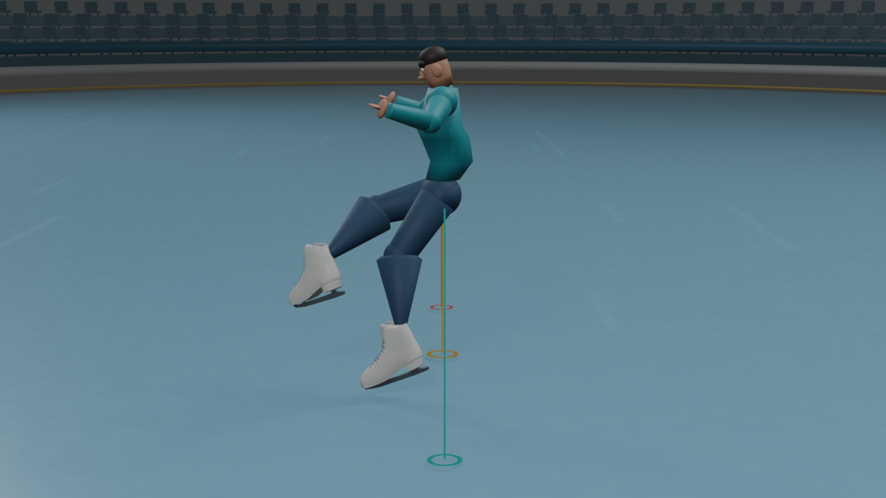
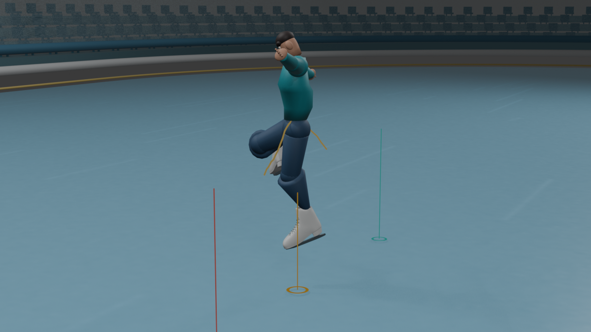
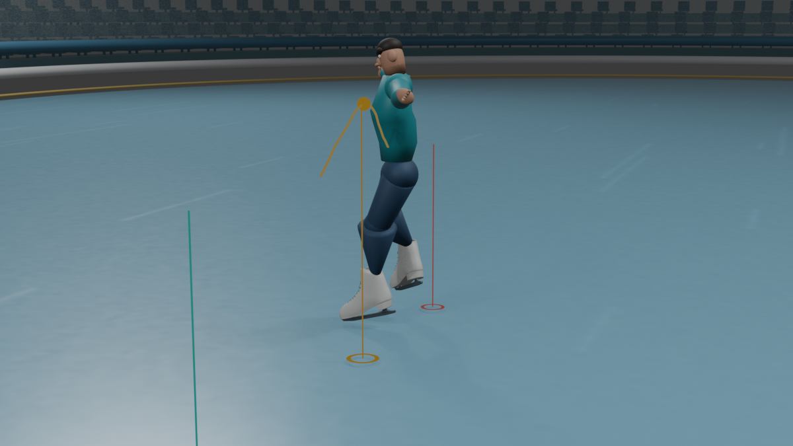
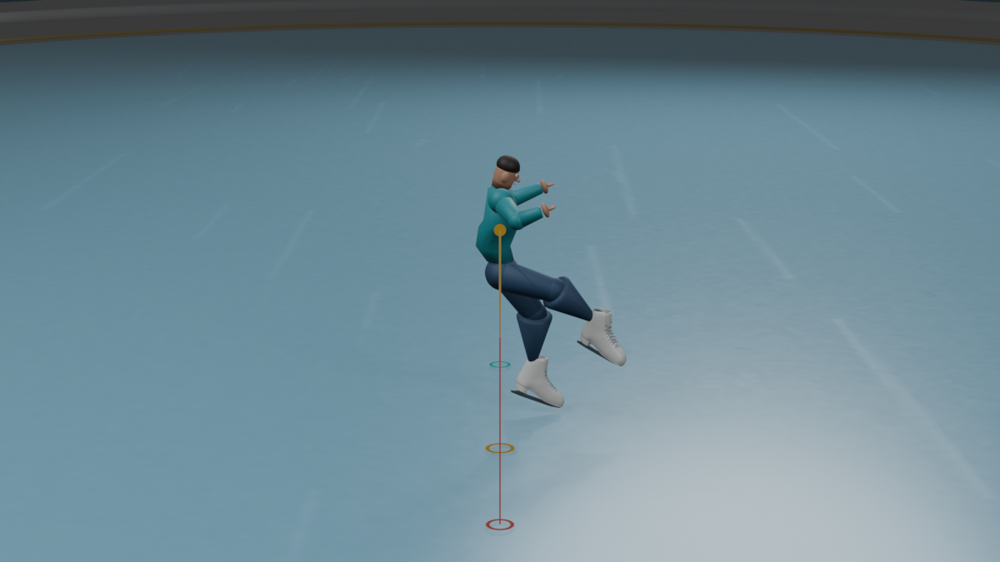
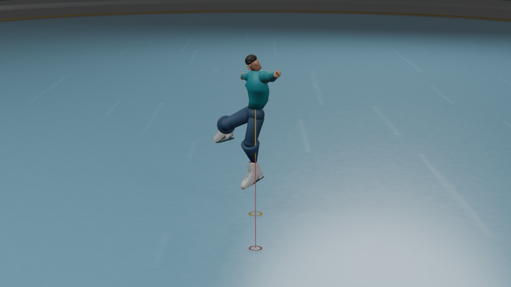
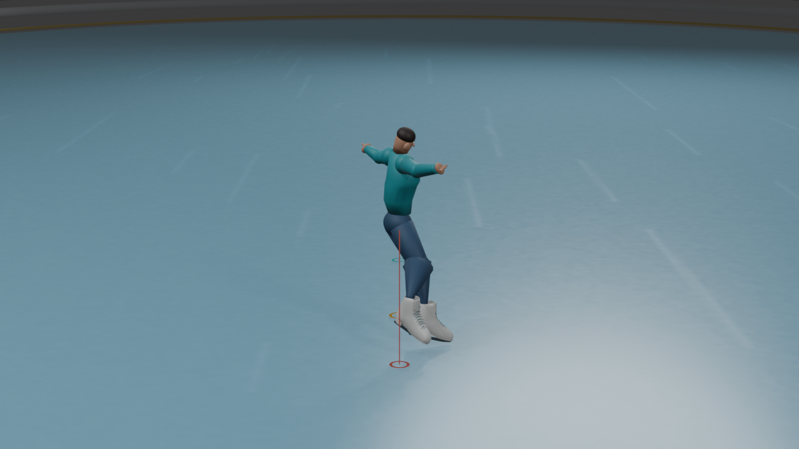
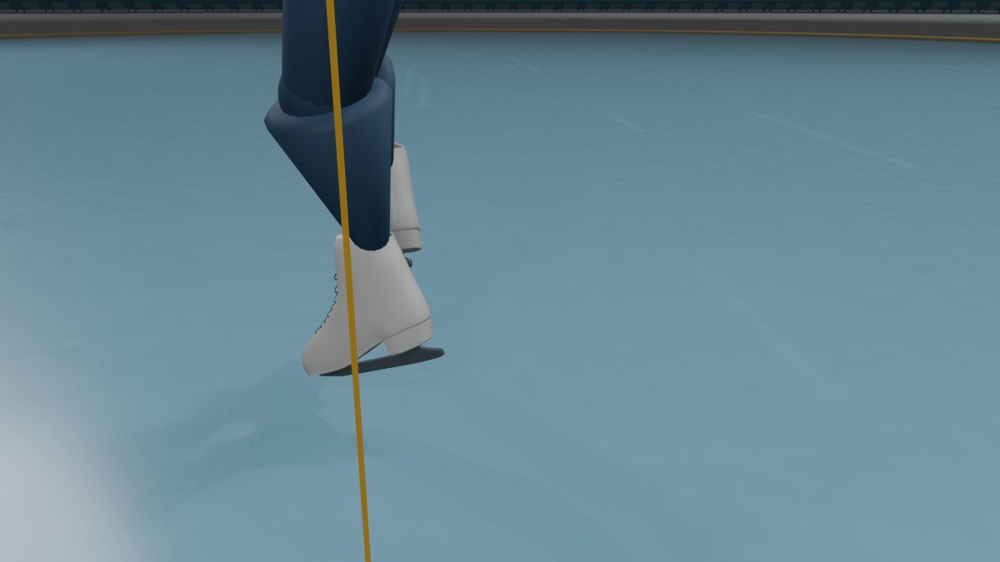

Single Axel · 1A pose study
A generic 22-joint reference sequence with a separate simulated approach, takeoff, 1.5-turn flight, landing and exit glide.
Illustrative model. Joint poses are a generic MotionExpert reference, reoriented for display. Phase timing, 540° airborne yaw, lift and travel are simulated; this is not Beijing 2022 athlete capture.
1.5 turnssimulated airborne yaw · 540°
0.44 millustrative peak lift
1.92 millustrative airborne travel
200display frames · playback slowed
ILLUSTRATIVE / SIMULATED
Full 3D skater and capsule arena · V125
V125 corrects the backwards-facing asymmetrical blade tip: both visible runner profiles are mirrored so the toe-pick end faces the matching boot toe, and the runners are centered under the boots. The face-to-boot yaw audit finds the right landing boot 22.4 degrees from the face at frame 90 (35 degrees maximum); its blade long axis tracks the boot within 0.00001 degrees. The left free leg remains more open, reaching 83.8 degrees at frame 72. U.S. Figure Skating describes a forward outside-edge take-off, 1.5 turns, and an opposite-foot backward outside-edge landing; no universal torso-to-free-skate angle is specified. The full-body side camera, front view, skate close-up, arena, and 3/4 follow views remain available.
The HUD reads the animated Blender/GLB root path. Simulated take-off/apex/landing events remain frames 60 / 76 / 90; root rise is 0.300 m and take-off-to-landing travel is 0.993 m. Actual-ice audit checked 2,545 samples per blade at 1/16-frame spacing against the ice top Z=+0.012 m; minimum clearance is +1.929 mm right and +1.956 mm left. A separate sampled body-overlap audit has not been rerun for V125. This does not prove continuous collision freedom or blade contact.
One Blender file contains the skater, fitted skates, rink, empty stepped stands, cameras, and animation. V124 and the default Blender scene remain unchanged. Skate source attribution and CC BY 4.0 terms are in third-party notices. Every pose, phase, trajectory, dimension, and correction is illustrative/simulated, not Beijing 2022 athlete capture, certified equipment, or regulation venue geometry.
One Blender file contains the skater, fitted skates, rink, empty stepped stands, cameras and animation. The default Blender scene remains Camera/Cube/Light. Skate source attribution and CC BY 4.0 terms are in third-party notices. The pose, stage labels and measurements are illustrative/simulated, not Beijing 2022 athlete capture, certified equipment or regulation venue geometry.







Blender V125 · 3D Single Axel playback
Play the V125 Blender scene as a real-time 3D model. The animated skater, capsule ice and empty stands load together. Switch between horizontal side, front, skate close-up and arena views; play, pause, scrub and compare slow with normal speed.
Drag to rotate · Shift+drag or right-drag to pan · scroll to zoom · Reset restores the selected camera preset.
PhaseLoading…
Rise from take-off—
Horizontal travel—
Peak rise · V125—
Take-off to landing—
Values are sampled from the animated Blender/GLB root path · illustrative / simulated. Separate teaching reference: 0.60 s · 0.44 m · 1.92 m.
Frame 1 / 160
All joint poses, phases and trajectories are illustrative / simulated; this is not Beijing 2022 athlete capture. The Blender V125 animation player uses the bundled Three.js runtime.
Independent generic 22-joint reference · phaseLoading…—
Generic side reference separate 2D reference player
Frame 1 / 200
Loading the generic joint reference…
Source, license and simulation assumptions
Joint positions come from the generic Single Axel sequence already used by this project, sourced from the MotionExpert repository. The 22 source joints are reoriented around the pelvis for this pose study. The source sequence is not identified here as a Beijing 2022 athlete or competition capture.
Takeoff at frame 44, landing at frame 102, 540° body yaw, 0.60 s flight preset and 3.2 m/s illustrative forward component are presentation parameters. The resulting 1.92 m travel and 0.44 m ballistic rise are computed examples, not measured performance. Playback is slowed; display-frame timing is not source timing. The 2018 Axel biomechanics paper linked below reports one elite junior case study; it is context, not a population average or the source of these joint poses.
Mazurkiewicz et al. (2018), Biomechanics of the Axel Paulsen Figure Skating Jump.
MotionExpert is distributed under Apache-2.0; the full license and project-level credits are retained at LICENSE.MOTIONEXPERT.txt and THIRD_PARTY_NOTICES.md. This new pose study adds no third-party mesh or texture.
Illustrative animation only. It does not establish verified blade contact, exact competition technique, measured jump height or actual athlete travel.